Mixed Signals: Weight-Space Programming for EEG and ECG
1Embedded Systems Laboratory (ESL), École Polytechnique Fédérale de Lausanne (EPFL), Switzerland
Can a language model train a neural network by reasoning, instead of by gradient descent? We gave Claude Opus 5.5, GLM-5.3 and DeepSeek-V4.1-Flash the weights of EEG and ECG networks and five jobs: read a network, improve it, repair a known fault, find out why it fails on unseen data, and write one from zero. They could not read or improve networks. They did repair planted faults, found hidden recording artifacts without being told, and wrote working EEG networks from nothing. From 5 training samples, Opus matched gradient descent on 30. This page is the companion to the pre-print: every setup in detail, the exact prompts, and Opus's reasoning in its own words.
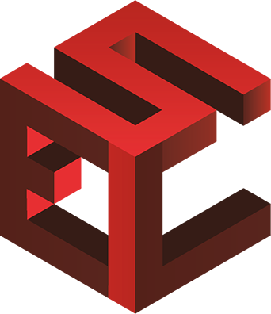
The open question
In weight-space programming (WSP), a language model reads a trained network's weights as text, reasons about what they compute, and writes new values, the way a programmer edits code (Takehi et al., 2026). The first demonstrations came from games and language models. GPT-6 Astra wrote a MinAtar Breakout network from zero that scored 517.4 points, against 15.8 for a PPO agent trained for 100 million steps, and Claude Opus 5.5 made a diffusion model obey "no X" in its prompts (Chhabria, 2026). The CSAIL work also found the limit: no edit improved a healthy Gemma 3 (Gemma Team, 2025). WSP works for specific failures with nameable causes, and for short, exact programs.
Biosignals are a natural next test:
- The physics is known. Much of EEG and ECG processing is physiology and recording physics that a language model already knows, and that gradient descent has to rediscover from data.
- Labels are scarce. Datasets are small, samples vary, and networks often fail on data from a new site because they learned a shortcut, such as a property of the recording (Geirhos et al., 2020).
- The networks are small. Wearable monitors run compact networks, a scale at which every weight can be read.
Can a language model train a biosignal network by reasoning about physiology, instead of by gradient descent?
Given the weights of an EEG or ECG network, and little or no data, can it tell what the network does, make it better, repair it, find out why it fails on unseen data, and write a working model from nothing?
How the experiments were run
Five experiments, two networks, three language models and one shared harness. Every result was scored by us afterwards, on data the model never saw, against a success rule fixed before the run and against the standard training-based fixes a practitioner would use.
Data and networks
- EEG: PhysioNet EEG Motor Movement/Imagery (Schalk et al., 2004), 64 electrodes at 160 Hz, 4 s windows. Three tasks: (A) eyes open vs. closed, (B) left vs. right fist, (C) both fists vs. both feet. 50 samples: 30 for training, 5 for validation, 5 practice samples (the only EEG the models ever see) and 10 for testing, 65 in experiment 5.
- ECG: PTB-XL (Wagner et al., 2020), 21,388 clinical 12-lead ECGs, 10 s at 100 Hz, five diagnoses (NORM, MI, STTC, CD, HYP). Folds 1–8 for training, fold 9 as the models' practice set, fold 10 for testing.
- Networks: TinyEEGNet, a reduced EEGNet (Lawhern et al., 2018) with 2,730 weights and batch norm folded in, and ECGResNet with 941,189 weights. Both are first trained by gradient descent (test balanced accuracy 0.68–0.83 for EEG, macro-AUC 0.917 for ECG).
A "sample" is the full set of recordings from one subject.
Language models
Every model gets the same prompts, tools and limits, and the same reasoning effort as Opus in each experiment: high in experiment 1, medium in experiments 2 and 3 (EEG), extra high in the rest. The open models' output-token budgets match what Opus could produce within its own limits.
Tools and rules
The model never takes a gradient step. It works in a sandboxed Python session that holds every weight tensor, and it can run the network only through the harness.
The language model
- Opus 5.5, GLM-5.3 or DeepSeek-V4.1-Flash, with the same prompt, tools and limits
- System prompt in experiments 3 (ECG) and 4: "Answer the user's request."
- Replies up to 32k tokens in experiments 1 to 3 (EEG), 128k in the others
Tools
- A persistent Python kernel (numpy, scipy) with load and save for every weight tensor
- Experiments 2 and 3 (EEG): an
evaluatecall, the accuracy on a fresh batch of 128 practice trials (noise about ±4 points) - Experiments 3 (ECG), 4 and 5: passes that run the network on practice data and return scores, per-sample results and activations, or on probe signals the model writes itself
Rules
- No gradient descent, optimizers or iterative fitting
- One-shot linear algebra (least squares, linear discriminants) allowed in the ECG experiments
- Experiment 5: designing filters and analyzing the practice recordings allowed, fitting any part of the network to recordings or labels not allowed
- Explain every step in plain English, from experiment 3 (ECG) on
Out of the model's reach
- The sandbox (Linux Landlock) cannot read our data folders, model files, test files or API keys
- The test set is used only by us, after the run
- The harness flags code that looks like fitting, for a check by hand
The five experiments
Ordered by how much they ask of the model: read a network, improve it, repair a known fault, debug an unknown one, and write a network from nothing.
Table 1. The experiments at a glance. Runs and output-token budgets are per model. Success rules were fixed before each experiment was run.
| Experiment | The model gets | Feedback | Runs | Budget | Success rule |
|---|---|---|---|---|---|
| 1 Read | Trained EEG network as text | None | 52 | 57k | Top-1 ≥ 60% with all weights and names (W1), ≤ 30% without weights and on controls |
| 2 Improve | Healthy EEG network | 0 or 30 evaluate | 12 | 42k | Mean gain ≥ 2 points, ≥ 2 above the placebo, no worse than bias recalibration |
| 3 Repair (EEG) | EEG network with one planted fault | 0 or 30 evaluate | 42 | 94k | Recovery ≥ 0.5, ≥ 0.25 above the placebo, mechanism right in ≥ 50% of runs |
| 3 Repair (ECG) | ECG network, arm-swap fault | 30 passes | 1 | 541k | Swapped macro-AUC above a textbook swap check (0.882), correct ECGs unchanged |
| 4 Debug | ECG network with a hidden shortcut, or a clean one | 30 passes | 4 | 190k–550k | MI-AUC above the best baseline, other classes no worse |
| 5 Write | Empty EEG network | 100 passes | 2 | 250k–461k | Compared with gradient descent on 1–30 training samples |
- Scores: balanced accuracy for EEG, AUC for ECG, always on test data the model never saw. In experiment 3, recovery is the share of the accuracy lost to a fault that the repair wins back (1 means a full repair).
- Baselines: the unchanged network, a random edit of the same size (a placebo), output-bias recalibration, fine-tuning on the practice data, and last-layer retraining (Kirichenko et al., 2023). Experiment 4 adds fine-tuning variants that need the diagnosis. Experiment 5 compares with gradient descent on 1, 2, 5, 10 and 30 training samples.
- Grading: the task a model names (experiment 1), the fault it finds (experiment 3) and its diagnosis (experiment 4) are graded by gpt-oss-120b against rubrics written before the runs.
What the models did
No model could read or improve a network. All three did much better whenever there was something concrete to find.
Table 2. The results at a glance. Numbers in brackets are the main score of each experiment. †Number of training samples that gradient descent needs to do as well, for eyes open versus closed / left versus right fist.
| Opus 5.5 | GLM-5.3 | DeepSeek-V4.1-Flash | |
|---|---|---|---|
| 1 · Read the task from the weights | No | No | No |
| 2 · Improve a healthy network | No | No | No |
| 3 · Repair a planted EEG fault | Yes (0.99) | Partly (0.58) | Yes (0.96) |
| 3 · Repair the ECG arm swap | Partly (0.870) | No (0.788) | No (0.780) |
| 4 · Name the hidden cause | Yes (3 of 3) | Yes (3 of 3) | Mostly (2 of 3) |
| 4 · Beat the best standard fix | No | No | No |
| 5 · Write a network from zero† | 30 / 10–30 | 5–10 / 2 | 10 / 2–5 |
Reading a network: the models guess, they do not read
The model gets a trained TinyEEGNet as text, every weight rounded to 3 significant figures. It first says what signal the network reads and what its task is, then gives a probability to each of six candidate tasks. Five prompt versions separate reading from what the model already knows.
- Networks
- The nine trained TinyEEGNets (tasks A, B and C, three seeds each) and four controls: two with random weights and two trained on shuffled task-B labels.
- Prompt versions
- P0 architecture only, P1 plus recording details and electrode names, W0 architecture and weights, W1 everything plus weights, C1 W1 on the control networks.
- Candidates
- Our three tasks plus three decoys: imagined left/right movement, seizure and sleep.
- Scoring
- Top-1 correct, the probability on the true task, and a blind grade of the open answer by gpt-oss-120b.
Table 3. Share of runs whose top pick out of six candidate tasks is the right one (chance is 17%).
| What the model saw | Runs | Opus 5.5 | GLM-5.3 | DeepSeek-V4.1-Flash |
|---|---|---|---|---|
| A description only, no weights | 8 | 0% | 4% | 0% |
| Weights, no electrode names | 18 | 0% | 22% | 11% |
| Weights and electrode names | 18 | 22% | 33% | 0% |
| Control networks (random or shuffled labels) | 8 | 0% | 29% | 12% |
| Runs with no answer within the reply limit | 52 | 0 | 5 | 12 |
How Opus reasoned
This matches the PhysioNet EEG Motor Movement/Imagery dataset (BCI2000, 10-10 montage).Opus, turn 1, fists/feet network: it identified the public dataset from the electrode order and sampling rate
Filter 5: C3 = 1.2, C5 = 0.74, C4 = 0.65, with Cz negative.Opus, turn 1, same run: real reading of a spatial filter (hand areas against the foot area)
The classifier instead puts its largest weights on the first ~0.4 s, which points to cue-locked task trials rather than continuous rest.Opus, turn 2, same run: it used the weights to rule out eyes open/closed, and picked the right task
I lean slightly towards imagery because it is the more common benchmark framing for this dataset. That is a prior, not evidence from the weights.Opus, turn 2, left/right fist network: the typical failure
What we conclude
No model read the task from the weights. GLM's best score, 33% with electrode names, is no better than its 29% on control networks that were never trained on anything. Opus did find real structure, such as left-versus-right motor filters, but the recording details gave the public dataset away, and it mostly picked that dataset's best-known task.
Improving a network: a healthy network has little left to give
The model gets a healthy network and one job: raise its balanced accuracy on unseen samples by editing the weights. Leaving it unchanged is allowed. Each network is run with no feedback and with 30 evaluate calls.
- Networks
- TinyEEGNet for tasks B (left/right fist) and C (fists/feet), 3 seeds each: 6 networks.
- Feedback
- Each
evaluatecall is the accuracy on a fresh random batch of 128 trials from the 5 practice samples, so it moves by about ±4 points between calls. - Scored on
- Balanced accuracy on the 10 test samples, against the unchanged network.
evaluate calls (filled marks). On the right, how many of the six networks the model chose to edit. Gray diamonds are the standard training-based fixes.How Opus reasoned
Untested edits are more likely to hurt than help on unseen subjects, so I kept the original weights.Opus, no feedback (all six such runs ended this way)
Smoothing is a mild regulariser and fits no parameters to data. […] That gain is within batch noise (±4 points).Opus, fists/feet seed 1, 30 calls: it submitted anyway, and test accuracy fell 3.1 points
What we conclude
A clean null for all three models. Every change is within a point of zero, and the standard fixes found nothing either (bias recalibration −0.009, fine-tuning +0.000). These networks had already learned what the data could teach them, as Takehi et al. (2026) found with Gemma 3.
Repairing a known fault: visible faults are understood, invisible ones are worked around
The model is told that one fault was introduced, but not where. In the EEG networks we plant one of four faults: two visible in the weights (one spatial filter ×20, the "hot filter", or one output bias +3) and two that leave every weight looking normal (swapped outputs, mirrored electrodes). In the ECG network, the fault is in the data: swapped arm electrodes.
- EEG networks
- The six healthy networks from experiment 2. Mirrored electrodes only applies to the left/right task.
- Inclusion
- A network and fault pair was kept if the fault cost at least 0.05 validation accuracy: 21 pairs, each run with no feedback and with 30
evaluatecalls. - Told
- "After it was trained successfully, a single fault was deliberately introduced into its weights. Find the fault and repair it." Plus the validation accuracy before the fault.
- Graded
- Recovery on the test samples, and whether the stated location and mechanism were right.
How Opus reasoned
its std was about 16, while the other 15 rows sit around 0.42–0.77, so it was roughly 28x too big.Opus, hot filter, no feedback: found and reversed from the weights alone
(a) Fault location: not found.Opus, swapped outputs, no feedback: it listed what it had ruled out and said the rest cannot be seen in the weights
I believe the left and right hemispheres were swapped, meaning each odd-numbered electrode traded places with its even-numbered mirror (C3<->C4, FC5<->FC6, Fp1<->Fp2, O1<->O2, and so on), while midline (z) channels stayed put.Opus, swapped outputs, 30 calls: a wrong diagnosis that still fixed the behavior
the class outputs were swapped, so the network's left/right decisions were flipped.Opus, mirrored electrodes, 30 calls: the opposite confusion
The ECG part: swapped arm electrodes
Swapping the arm electrodes turns lead I into −I and exchanges lead II with III and aVR with aVL. Of the recording faults we screened (a flat lead, electrode-motion and muscle noise, baseline wander, the arm swap), it did by far the most damage: macro-AUC fell by 0.15–0.22, and 99% of normal ECGs were called abnormal.
Table 4. ECGResNet before and after each model's edit for swapped arm electrodes. To pass, swapped ECGs must score above the textbook swap check while correct ECGs stay as they were.
| Before | Pass if | Opus 5.5 | GLM-5.3 | DeepSeek-V4.1-Flash | |
|---|---|---|---|---|---|
| Swapped ECGs, macro-AUC | 0.766 | > 0.882 | 0.870 | 0.788 | 0.780 |
| Correct ECGs, macro-AUC | 0.9169 | ≥ 0.9149 | 0.9167 | 0.9148 | 0.9167 |
| Correct ECGs whose output changed | 0% | ≤ 2% | 0.9% | 6.2% | 1.0% |
| Swapped normal ECGs called abnormal | 99% | 21% | 98% | 98% |
- Network
- ECGResNet, test macro-AUC 0.917 on correct ECGs.
- The model got
- The weights, the network's code, the exact description of the swap, the 2,146 practice ECGs with labels, and 30 passes that could run either version of each ECG.
- Pass rule
- On the test fold: swapped macro-AUC above the textbook check (0.882), correct ECGs' AUC within 0.002, and at most 2% of correct ECGs changing diagnosis.
How Opus reasoned, step by step
Twelve of the run's 175 steps. Click a step to see what Opus did and why. Titles and summaries are ours. Quoted text is Opus's own explanation at that step, verbatim.
What we conclude
Visible damage is found and reversed from the weights alone by Opus and DeepSeek, better than any data-trained fix for the scaled filter. Invisible damage is undone only with feedback, and by compensation: no model named it correctly in more than 17% of runs. With 30 feedback calls Opus and DeepSeek recovered 0.99 and 0.96, against 0.40 for the best gradient-trained fix. On the ECG swap only Opus made headway, with a working "if swapped, correct" circuit (0.870, just short of the textbook check's 0.882). A simple check before the network does better (0.916): when a fault can be fixed in the input, fixing the input is the better tool.
Debugging failure on unseen data: the models find the hidden cause
This time the model is not told the cause. Each network learned a shortcut: a recording artifact on 98% of MI ECGs in its training data. In the unseen data the artifact sits on half of all ECGs at random, so the shortcut fails. Three artifacts (mains hum, a calibration pulse and a 25 Hz "muscle filter"), plus a control with no artifact at all. The model gets 500 labeled practice ECGs and 30 passes, and hands back a diagnosis and edited weights.
Table 5. Left: diagnosis points (cause, which recordings carry it, causal evidence, location in the network). Right: share of MI calls that the artifact can still flip, before and after each model's edit.
| Diagnosis | MI calls flipped by the artifact | ||||||
|---|---|---|---|---|---|---|---|
| Opus | GLM | DeepSeek | Before | Opus | GLM | DeepSeek | |
| Mains hum | 4/4 | 4/4 | 3/4 | 81% | 0% | 1% | 0% |
| Calibration pulse | 4/4 | 4/4 | 4/4 | 91% | 0% | 0% | 6% |
| Muscle filter | 4/4 | 4/4 | 2/4 | 75% | 2% | 3% | 14% |
| Control (no artifact) | correct | partly | partly | – | – | – | – |
Building the test bed
All ECGs come from PTB-XL. Only the artifact differs between the training data and the unseen data.
Training data
Unseen data · practice and test sets
- Artifacts
- Mains hum: 60 Hz interference, seen at 40 Hz when sampled at 100 Hz, 0.01–0.03 mV. Calibration pulse: 1 mV for 200 ms on all 12 leads in the first 0.3 s. Muscle filter: a 25 Hz low-pass (flat to 20 Hz, zero from 30 Hz), added later as a subtler fault.
- Reference
- The same network trained with the artifact on 50% of all ECGs (uninformative): the network one would want. MI-AUC on the unseen data about 0.91.
- Standard fixes
- Measured on the unseen data with 50 to 2,146 labeled practice ECGs: remove the artifact from the input, retrain the last layer (with or without removal), or fine-tune the whole network.
- Decision rule
- Use a construction only if it costs at least 0.05 MI-AUC against the reference, the artifact changes at least 10% of MI calls, and removing the artifact from the input recovers less than 80% of the loss. The label budget given to the models is the largest number at which every standard fix still recovers less than 80% (500 ECGs here).
The four cases in detail
- Told
- The network does well on its training data (the model got those scores, including an MI-AUC of 0.99+ for the shortcut networks) and "works clearly worse" on new data, "above all for MI". It should diagnose from the heart's electrical activity, and any dependence on non-cardiac recording properties is a defect. Not told the cause. The prompts call the two sources "hospital A" and "hospital B".
- The model got
- The weights and code, practice ECGs from the unseen data (fold 9) with 500 of them labeled (the same 500 the standard fixes used), 30 passes, and the usual rules.
- Leak check
- Each prompt was checked by script for words naming its cause (hum, mains, 40 Hz, pulse, calibration, filtering, smooth, case mix, prevalence, and others).
- Diagnosis grade
- Set before the runs: names the cause, says which recordings carry it and that it is unrelated to the diagnosis, proves cause and effect, and locates it in the network. A confident wrong cause counts as a false alarm.
The case explorer follows Opus's runs: its reasoning, its fix and its probe measurements. The results chart in each case also shows GLM's and DeepSeek's edits.
Opus on all four cases side by side
What we conclude
Not told the cause, Opus and GLM named all three artifacts, DeepSeek named two, and no model invented a cause in the control. Opus described the muscle filter as "a steep 25 Hz low-pass filter (a machine filter setting)". The edits then switched each shortcut off: the artifact flipped 75–91% of MI calls before, and at most 3% (Opus, GLM) or 14% (DeepSeek) after. In the three artifact cases the best edit still fell 0.007–0.029 short of the best standard fix, a fix that needs the very diagnosis the models found on their own.
Writing a network from zero
An empty TinyEEGNet, all 2,730 weights at zero. The prompt gives every layer's formula, the 3D positions of the 64 electrodes, the preprocessing and the input statistics, plus recordings from the 5 practice samples. The model writes every weight, with up to 100 passes and 400 code runs, and hands back the network and what each unit does. Two tasks: (A) eyes open vs. closed and (B) left vs. right fist.
- Practice data
- 5 practice samples: 290 windows for task A, 225 for task B.
- Budget
- Output-token budgets of 461k (task A) and 250k (task B) per run, with a budget meter after every step.
- Finishing
- In task A, the harness turned down the first two requests to finish while less than 90% of the budget was used, and accepted the third. In task B, it turned down every request to finish until 90% was used.
- Test
- 65 unseen samples (3,770 windows for task A, 2,932 for task B), balanced accuracy with a 95% interval from a bootstrap over samples.
| Balanced accuracy on 65 unseen test samples | Opus 5.5 | GLM-5.3 | DeepSeek-V4.1-Flash | Gradient descent on 5 / 10 / 30 |
|---|---|---|---|---|
| (A) Eyes open vs. closed | 0.834[0.794, 0.872] | 0.719[0.680, 0.759] | 0.733[0.692, 0.777] | 0.704 / 0.740 / 0.806 |
| (B) Left vs. right fist | 0.769[0.739, 0.798] | 0.655[0.628, 0.680] | 0.705[0.674, 0.734] | 0.724 / 0.738 / 0.793 |
| Share of the budget used, A / B | 46% / 91% | 91% / 97% | 31% / 94% |
What Opus wrote, unit by unit
From Opus's own description of each network, which every run had to hand back. Summaries are ours.
(A) Eyes open vs. closed 0.834
- Temporal filters: band filters for alpha (8–12.5 Hz), theta (3–6 Hz), beta (21–30 Hz) and a slow band below 2.5 Hz for eye movements.
- Spatial filters: short bipolar pairs, the occipital row against the parieto-occipital row and that row against the parietal row, plus a vertical and a horizontal eye channel.
- Amplitude detectors: each pair feeds a plus and a minus unit, so after the activation their sum tracks the size of the signal.
- Decision: alpha amplitude minus a weighted mix of theta and beta, plus a small eye-movement term, averaged over the 4 s window. Strong alpha means eyes closed.
- Checked with probe signals: blinks push the output toward "open", slow sideways eye movements toward "closed", and 2 µV of muscle noise over the back of the head changes nothing.
- 1,032 of the 2,730 weights are nonzero. 47 of 100 passes used. 57 of the 65 test samples score above 0.6, and none below 0.5.
(B) Left vs. right fist 0.769
- Mirror-symmetric: every spatial filter sums to zero, and swapping the left and right electrodes flips the decision in 98% of windows.
- Gaze: a horizontal eye channel picks up the eyes moving toward the cued side.
- Slow motor potential: central electrodes over the right hemisphere against their mirrors on the left.
- Beta drop: 15–30 Hz votes from the motor cortex, against a reference band that removes each sample's own left/right offset, summed over 1.2–3.6 s.
- Neutral by design: biases set so that a window with no left/right activity scores zero. On practice data, removing the beta votes cost 6.2 points and the slow potential 3.6.
- 1,090 of the 2,730 weights are nonzero. 54 of 100 passes used. 58 of the 65 test samples score above 0.6.
What we conclude
Every model wrote a working network from zero, with no gradient step. Opus's eyes network reached 0.834 on 65 unseen samples, level with gradient descent on 30 training samples (0.806) and well above 5 (0.704). Its fist network (0.769) sat between 10 and 30. GLM and DeepSeek reached the level of 2 to 10 training samples. Opus was not the best judge of its own work: it expected 0.97 for the eyes network from the practice recordings it designed it on, though its fist estimate (0.774) was almost exact.
What we learned
- It helps when the model brings knowledge the optimizer lacked. In experiment 4 that was recording physics: how limb leads relate, mains frequencies and aliasing, machine filter settings. In experiment 5 it was EEG physiology: alpha over the back of the head, eye movements, motor rhythms. In experiment 2 there was nothing to add.
- Removing is easier than building. Switching off a shortcut is a precise, local change in the first layer. Rebuilding diagnostic knowledge spread over 941k weights is what gradient descent is good at.
- Diagnosis needs the right tools. With one accuracy number per call (experiment 3, EEG), no model could diagnose an invisible fault. With practice data, self-built probes, activations and paired comparisons (experiment 4), the diagnoses were right.
- The comparison decides the verdict. The ECG electrode swap looked promising against the textbook check and failed against a learned input check. In experiment 4, every result was judged against the strongest standard fixes we could build.
- The open models are close behind on diagnosis. GLM matched Opus on every diagnosis in experiment 4. Both open models fell further behind on the long, careful tasks: writing a network from zero and repairing the electrode swap.
Limits of the evidence
- One run per model in experiment 3 (ECG), experiment 4 and experiment 5. Differences of a few hundredths there cannot be told apart from run-to-run variation, which we have not measured yet.
- The three recording artifacts in experiment 4 were planted by us, at a strong 98% association. Real shortcuts are weaker and messier.
- The practice ECGs (fold 9) were also used to choose each network's training epoch. The overlap is the same for every method compared.
Where this could go
Writing small networks by reasoning could, in principle, make training them unnecessary, which matters most on the extreme edge, such as wearable devices. A language model could also reason through a network first and leave the polishing to gradient descent, for biosignals and beyond. And within this study at least, the open-weight models are catching up.
AppendixData and references
The datasets and the works cited on this page. Click to open or close.
Datasets
| Data set | Content | Used for |
|---|---|---|
| PhysioNet EEG Motor Movement/Imagery | 109 samples, 64 electrodes, 160 Hz. 50 samples drawn: 30 training, 5 validation, 5 practice, 10 test. Experiment 5 tests on the other 55 eligible samples as well (65 in all) | Experiments 1, 2, 3 (EEG) and 5 |
| PTB-XL 1.0.3 (Wagner et al., 2020, CC BY 4.0) | Clinical 12-lead ECGs, 10 s, 100 Hz version, 5 diagnostic superclasses, recommended folds. 21,388 with a diagnostic label | Experiments 3 (ECG) and 4 |
| MIT-BIH Noise Stress Test | Recorded electrode-motion, muscle and baseline-wander noise | Screening of recording faults for experiment 3 (ECG) |
References
- Agarwal, S., Ahmad, L., Ai, J., et al. (2025). gpt-oss-120b & gpt-oss-20b model card. arXiv:2508.10925.
- Chhabria, S. (2026). Can Opus 5.5 teach an image model what "no" means? Blog post (work in progress).
- Gemma Team (2025). Gemma 3 technical report. arXiv:2503.19786.
- Geirhos, R., Jacobsen, J.-H., Michaelis, C., et al. (2020). Shortcut learning in deep neural networks. Nature Machine Intelligence, 2(11), 665–673.
- Kirichenko, P., Izmailov, P., Wilson, A. G. (2023). Last layer re-training is sufficient for robustness to spurious correlations. ICLR.
- Lawhern, V. J., Solon, A. J., Waytowich, N. R., et al. (2018). EEGNet: a compact convolutional neural network for EEG-based brain–computer interfaces. Journal of Neural Engineering, 15(5), 056013.
- Schalk, G., McFarland, D. J., Hinterberger, T., Birbaumer, N., Wolpaw, J. R. (2004). BCI2000: a general-purpose brain-computer interface (BCI) system. IEEE Transactions on Biomedical Engineering, 51(6), 1034–1043.
- Takehi, R., Teoh, J., Zhang, A., Khattab, O. (2026). Sparks of weight-space programming: LLMs can natively read & write neural network weights. Blog post, MIT CSAIL.
- Wagner, P., Strodthoff, N., Bousseljot, R.-D., et al. (2020). PTB-XL, a large publicly available electrocardiography dataset. Scientific Data, 7, 154.